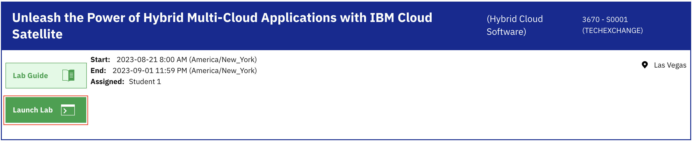
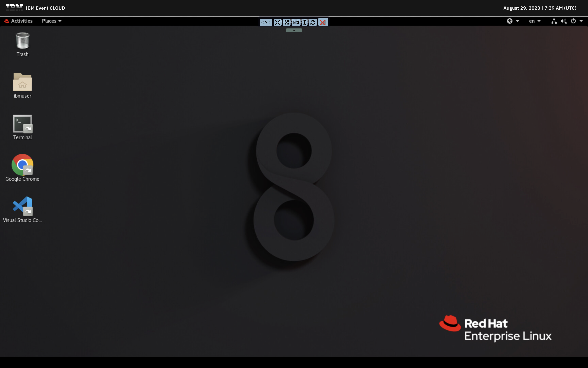

IBM TechXchange 2023 / Unleash the Power of Hybrid Multi-Cloud Applications with IBM Cloud Satellite [3670]
Welcome
Session details
IBM TechXchange 2023 / Unleash the Power of Hybrid Multi-Cloud Applications with IBM Cloud Satellite [3670]
Embracing a hybrid multi-cloud architecture can be transformative for businesses. It offers a flexible and secure way to handle IT infrastructure, optimize costs, and ensure maximum uptime. Meet IBM Cloud Satellite, your partner in running workloads across multiple environments — be it private or public clouds or on-premises. Ready to dive into a hands-on session with IBM Cloud Satellite? Join us to learn how you can securely and efficiently expose your applications running on multi-cloud infrastructure.
Your lab environment consist of the following components:
Satellite location running on AWS (multi-cloud use case):
runs with 6 hosts (3 hosts are assigned to the location control plane, 3 hosts are used as OpenShift workers)
OpenShift cluster running on AWS Satellite location:
workers are exposed publicly with an AWS load balancer
Satellite location running on on-premises (hybrid-cloud use case):
runs with 6 hosts (3 hosts are assigned to the location control plane, 3 hosts are used as OpenShift workers)
OpenShift cluster running on on-premises Satellite location
Jumpbox:
connects to the AWS VPC and to the on-premises infrastructure with VPN
Excercises
Get familiar with your lab environment
In this excercise you are going to learn about the architecture of your lab environment and learn the basic commands for IBM Cloud Satellite and Red Hat OpenShift on IBM Cloud.
Open your jumpbox
In the lab system, click the "Launch Lab" button.

On the following page, you will see one virtual machine, that is your jumpbox. Click the Red Hat icon on the screen to connect.
At this point you should be connected to the jumpbox.

Login to the IBM Cloud account using CLI
The jumpbox has IBM Cloud CLI preinstalled. To login to the IBM Cloud account open the terminal and execute the following command:
(Note: the IBMCLOUD_API_KEY environment variable contains an API key pregenerated for your lab user.)
Inspect Satellite locations
To list Satellite locations, use the following command:
$ ibmcloud sat location ls
You should see two Satellite locations aws-location-XX is running on AWS hosts, while on-prem-location-XX runs on on-premises hosts.
To see the details and status of a Satellite location, you can use below command:
$ ibmcloud sat location get --location aws-location-XX
Hosts that have sufficient compute, storage and network can be attached to a Satellite location by executing an attach script on the target machine. Once a machine is attached to a location, it can be assigned to run workloads, each location must have at least 3 machines assigned to run the control plane.
To list hosts attached to a Satellite location, you can use:
$ ibmcloud sat host ls --location aws-location-XX
Quiz
How many hosts does the aws-location-XX have and in what state?
Correct!
Nice job!
Not exactly!
Run the ibmcloud sat hosts ls --location aws-location-XX command and inspect the State and Cluster columns in the output.
Inspect OpenShift clusters
To list clusters, use the following command:
$ ibmcloud oc cluster ls
You should see two OpenShift clusters intranet-XX and public-services-XX. Note the "Location" column in the output, the intranet-XX cluster is deployed onto the on-prem-location-XX Satellite location, while the public-services-XX cluster is deployed onto aws-location-XX. Creating an OpenShift cluster on a Satellite location is pretty straight forward, you just need to select the target location when creating the cluster instead of selecting an IBM Cloud datacenter.
To see the details and status of a cluster, you can use below command:
$ ibmcloud oc cluster get --cluster intranet-XX
To fetch the kubeconfig for a cluster, you can use the following command:
At this point you should be able to execute kubectl or oc commands, for example:
$ oc get nodes
Quiz
How many nodes does the public-services-XX cluster have?
Correct!
Nice job!
Not exactly!
Fetch the kubeconfig using the ibmcloud oc cluster config --admin --cluster public-services-XX command and then list the nodes with the oc get nodes command.